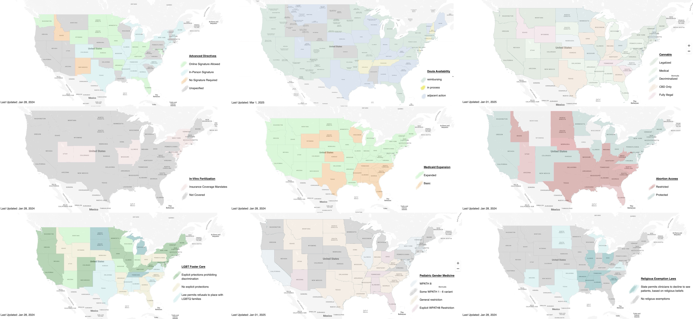

0.6.6 - ci-build
USInterstateInteroperability - Local Development build (v0.6.6) built by the FHIR (HL7® FHIR® Standard) Build Tools. See the Directory of published versions
| Official URL: https://github.com/awatson1978/us-state-profiles/ImplementationGuide/ig.fhir.us-interstate-interoperability | Version: 0.6.6 | |||
| Draft as of 2025-03-01 | Computable Name: USInterstateInteroperability | |||
Modern clinical information systems are regulated by various laws, including (but not limited to) HIPAA, GDPR, and 21st Century Cures. These laws range from specifying how many signatures are required for advanced directives, to laws prescribing expectations of patient privacy, to religious exemptions for clinicians from practicing certain types of medicine, to what kind of family structures a healthcare system recognizes in the adoption and foster care systems, to how expansive the social safety net is via programs such as Medicaid. These differences in laws between states express themselves at the ballot box and in culture war topics, as they are precisely the topics which people have differing opinions on. And they are, therefore, also the precise topics for which we have data exchange challenges and where interstate interoperability breaks down.

The purpose of this guide is to outline a format for encoding these laws using Fast Healthcare Interoperability Resources, so that healthcare systems can exchange information about the jurisdictional environment that data was collected in and will be used in. The intent is to eventually provide something akin to USCore for the various US states and territories. Thus, one might have an Illinois Core, or a Texas Core, or any of the other states. And within that core profile for the state, would be encoded descriptions of various state laws that may impact the delivery of healthcare or the modeling of health data in that state.
Following this logic, one may deduce that the areas where such data modeling will be relevant are issues where there is disagreement between states, and therefore represent cultural hot-topics. As such, this guide serves a dual purpose. With these state profiles in hand, mappings can then be created, so as to translate health records from one environment to another, and thereby ease tensions and friction between regions that have different cultural values and priorities.
This implementation guide introduces an approach to jurisprudence interpretation that may be somewhat novel. For the purposes of this implementation guide, and the systems that will use the profiles and artifacts it documents, this guide chooses to use the FHIR Consent resource to model state laws. This approach was chosen for the following reasons:
policy.authority field which explicitly specifies a jurisdictional body, such as a State or City.provision field, which allows arbitrarily deep inclusion/exclusion provisions with permit/deny rules, which is flexible enough to encode most of the laws that are relevant to practice healthcare.With these constraints guiding this data modeling decision, we therefore arrive at the notion of a US State participating as an actor in the provision of healthcare, and consenting to particular activities taking place within its borders. In particular, we would encourage implementers to look at Citizens United and other case law which confers personhood on organizations. The rational being that a collection of individuals has the same rights as any single individual, due to it being comprised of those members with those rights in the first place. A democratically elected body such as a state legislature is even more explicitly so.
And so, therefore, the notion is as follows: the state Consent record represents the society of individuals who live in a geographic area consenting that a particular activity may occur within their jurisdiction per the democratic legislative process.
This may be a novel jurisprudence interpretation. If using the Consent resource is truly egregious from a legal perspective, this implementation guide can either use the Base resource or define a new Logical Model or Resource, and copy the needed fields over and create a new resource if need be.
But for the purposes of expediency, we have chosen to use existing terminology where we can, and are starting with this data modeling approach.
This guide is a work-in-progress, and is still an early draft of a concept that we are trying to articulate, but have yet to fully flesh out. The initial concept was that "we need to profile the 50 states". That then became "we need to profile the 57 states and territories". And 50+ profile stubs were then created, one for each state.
We then started considering use cases for using these profiles, which seemed to be driven by culture war topics. The issues that need the most help with interstate interoperability are precisely those issues which differ from state to state, and those are the topics that are often being debated in the public sphere. This led us to us converting various policy maps of various legislative debate topics into FHIR format, using the Location resource. And it quickly became apparent that to manage these maps, we needed to save a copy of the Location records used to generate them.
After developing a small collection of use cases, the Locations records were then used to construct state specific Consent instances.
We are now at a point where we are considering which approach is best… profiled Consent records, Location instances, or Consent instances. The idea has been developed enough that we're generally confident that we have a proof of concept; and it's getting time to seek feedback from the broader HL7 community. Location vs Consent; profile vs instance… these are technical details that may have performance implications, but in some aspect don't matter, because the general approach could be done in a couple of different ways.
Rather, we want to draw attention to the general idea that we could - and should - have a structured way of exchanging data about the legislative and jurisprudence environment in which healthcare organizations and patients operate in. It's this general idea we wish to bring to the HL7 community, and have it weigh in on how best to go forward with this idea.
The current list of legislative topics is neither complete nor comprehensive. This project welcomes the addition of additional legislative topics, as time and effort permits.
As a spin-off of the PACIO project, the first legislative topic addressed was that of Advanced Care Directives. Creating seaprate Consent resources and profiles was a bit of over-engineering for the single Advanced Directives use case. However, once in place, when other topics began presenting themselves in conversations and the news, there was an obvious place to put them.
Early topics that found their way into this guide were hot-potato culture war issues that were in the news in the early 2020s, such as Cannabis deregulation, Abortion access, and Pediatric Gender Medicine. However, with only these topics, the guide came across as overly focused on sex and gender issues; which was not the goal of the project, per se.
Instead of going deeper into these niche topics and modeling workflow or addressing policy recommendations; the decision was made to keep a neutral "referee" perspective, and to go broader. Instead of diving deeply into what should be on a particular issue, this guide attempts to address what is across many different topics.
Additional topics that have been proposed for future updates include: age of consent, opioid legalization, medicaid state waivers, open-carry laws, speed limits, amongst others. If there is a SNOMED, LOINC, ICD-10, DSM, or RXNORM code related to a state law, then it can likely be modeled by this approach to Consent resources, and is fair game for inclusion in this resource.
We note that there are significant framing issues in the way that legislative topics are presented.
Eventually, we envision a group such as the National Library of Medicine's Value Set Authority, or possibly the TEFCA Qualified Health Information Networks (QHIN) as managing this resource, and providing state level legislation in computable structured data format.
THIS IMPLEMENTATION GUIDE IS FOR INSTRUCTIONAL PURPOSES ONLY. WHILE WE HAVE DONE OUR BEST TO ACCURATELY REFLECT POLICY AS OF THE DATE THIS IMPLEMENTATION GUIDE WAS AUTHORED, WE CANNOT GUARANTEE IT IS CORRECT NOW, NOR CAN WE GUARANTEE IT WILL REMAIN CORRECT IN THE FUTURE. THIS GUIDE IS PROVIDED AS-IS. PLEASE CONFIRM ALL STATE REGULATIONS BEFORE USE.
The above being said, we seek to develop a crowdsourcing model, where anybody can submit updates to the guide. We need your help in keeping this guide up to date. If you find a discrepency between what is in this guide and state law, please follow these steps:
Updating a Map
workflow-create-us-states-map utility to generate a new map and array of Location records.Adding a new topic map
The maps in this implementation guide inform us of a great many things, and provide situational awareness of recent changes in laws across North America. Yet they also raise many questions. Readers may be interested in understanding some of the underlying factors for why these maps distribute the way they do on certain topics. The author has found the following resources useful in making sense of these cultural dynamics; and believe much of them can be explained by how geography and climate influence local economics and culture.
For project maintenance, please contact:
Abigail Watson awatson@mitre.org
For community help, please post questions on Zulip:
https://chat.fhir.org/
{kind=link}